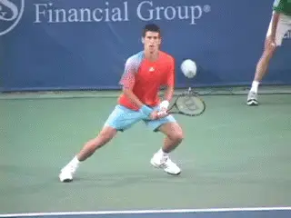

Why Do We Want to Win?¶
By Allen Fox, Ph.D.¶

**Like all social species, we are programmed to compete.**
Human beings evolved to live and work in groups. We are a social species, like wolves or chimpanzees, and as such there is a social hierarchy. It is a pecking order or social ranking, and, like the other species, who is on top of whom feels important.
Simply, we are genetically programmed to compete with each other to elevate our rankings on this hierarchy. Other social species achieve their rankings by fighting (or by threatening to fight). We do it by competing successfully in various areas, one of which is sport.
At its most basic level, a competitive tennis match is a symbolic fight for supremacy, a concept that clarifies many of the otherwise incomprehensible emotions swirling around such matches.
Tennis is a symbolic fight, because you just can't hit each other. In tennis, each contestant pits his or her physicality, intelligence, will, nerve, fortitude, and even character against an opponent who is doing likewise as they wrestle to a decision. On court you can 'feel' your opponents pushing you around - trying to dominate and control you - while you do the same in return.

**There is no way around it: losing is painful and feels personal.**
I can recall from my childhood the feelings of nervous dread I experienced when some bully in my class threatened to \"beat me up\" after school. As I sat uncomfortably in my seat waiting for school to let out I was anxious and not at all looking forward to the physical trial to come.
Years later these same feelings sometimes popped up before important tournament tennis matches. In particular, I recall a morning before a tough tournament final when the sky was menacing with heavy overcast and drizzle, and there was growing doubt as to whether the rain would hold off long enough to play the match.
I had mixed emotions. On the one hand I wanted to get out there to get it over with; on the other I was hoping it would rain and the match would be called off for the day so I wouldn't have to play. But in any case, I recognized the emotions of anxiety and dread as the same ones I experienced as a kid before having to face the bully.
And my anxiety about the physical fight did not involve worrying about getting my nose broken or my teeth knocked in. I wasn't concerned about bodily damage. I was simply afraid of being \"beaten up,\" although I didn't really know what that meant at the time.
I had vague images of the bully somehow ending up on top of me and me losing and being disgraced. A similar dread overhung the final tennis match, also involving the uncertainty and/or fear of who was going to end up on top in the coming struggle to impose our wills on each other.

**Fear enters every match, even if there is really nothing to fear.**
Enter Fear
Fear enters every tennis match. As with all fights, symbolic or otherwise, fear and stress are integral parts of the equation. Of course tennis is just a game, and if one takes a step backward it is obvious that there is really nothing to be afraid of.
But in the throes of hard-fought, nose to nose competition it feels more consequential than that. It feels personal, and losing is painful, particularly if one has devoted more than a token effort to the undertaking.
On the other hand, winning is pleasant and satisfying and can elevate one's mood for the rest of the day. Thus the emotional discrepancy between the two alternative outcomes is considerable. The winner feels fulfilled, even elated, while the loser feels diminished, humbled, maybe even faintly disgraced. The winner has proven himself superior.
Fear comes from the fact that no matter how hard one tries to win he or she may still lose. This ultimate uncontrollability of outcome, regardless of preparation or effort, combined with the substantial emotional discrepancy between winning and losing can cause an unpleasant level of stress.

The discrepancy between winning and losing causes unpleasant levels of stress.
Does winning really matter? The most widely read tennis book of all time has been \"The Inner Game\" by Tim Gallwey. Its thesis was that winning doesn't matter, and that good feelings and enjoyment of the process were more important. It spoke against becoming concerned with strokes and technique and postulated that such concerns actually hindered the emergence of the excellent player already residing within.
To a certain extent Gallwey was onto something. Of course, winning a tennis match (other than for professionals) is unimportant in the greater scheme of life, and focusing on winning during competition can certainly make players nervous and hinder performance. I can't argue with any of this.
As a book of the 1970's, it fed nicely into the emerging cultural zeitgeist. [[It was, at its heart, anti-competitive and downplayed establishment ideas of hard work on technique, discipline, and playing to win.] [Those of us around at the time found it seductive to ditch old-fashioned precepts that forced our noses to the grindstone and stressed us out by pushing us to achieve. We enjoyed thinking we were smarter than the old fogies who developed the establishment principles. Since winning was hard to do, we were pleased to learn that it didn't matter.]]

**Tim Gallwey, architect of the Inner Game, was right about some things.**
The Nobel Prize
Unfortunately, the wiring of our nervous system is not consistent with this happy theory. In his 1966 book, \"On Aggression,\" Nobel prize winning ethnologist, Konrad Lorenz, concluded, after years of painstaking observation, that all species of animals, particularly males, instinctively fight each other over resources. Social species, including human beings, compete, fight, or threaten to fight in order to raise their status in the social hierarchy, higher status providing greater access to territory, food, and, with males, to females.
This may all sound pretty distant from the tennis courts, but winning tennis matches has not in any way hurt Roger Federer's bank account (i.e. territory) or attractiveness to women. And it goes without saying that in any group of tennis players, the highest social status goes to the player who wins the most, just as in a group of businesspeople, high status accrues to the individuals with the most money.
Of course, there is more than a little truth in Gallwey's theories. For example, it is satisfying in and of itself to improve one's skills as a tennis player - to become more competent. As a form of creativity, we all take pleasure in artistically using our capabilities - hitting the ball crisply, moving about the court smoothly and on balance, swiftly anticipating our opponent's shots, and having our tactics function effectively.

**Konrad Lorenz: ethnology reveals truths that tennis players cannot ignore.**
We are programmed to derive satisfaction from building things - projects -- where we get better at something. So we enjoy the process of improving at tennis (or anything else, for that matter, such as: playing an instrument, speaking a foreign language, or increasing the size of our bank accounts).
These things are instinctively pleasing above and beyond simply winning tennis matches, so it is clear that we have other significant instincts and needs besides simply fighting and competing to elevate our social status. But Lorenz does seem to accurately describe this one noteworthy part of the human instinctual condition - that we are hard-wired to want to win contests against other people - and try as we may, it is not possible to wish it away.
Women Versus Men
In pursuing the answers, it is important to note that women and men compete differently. Women are wired somewhat differently from men, and the fighting aspect of tennis makes the match-play process more complex for them.

**Antagonism simply isn't as natural for women.**
Males are accustomed to fighting and competing from early childhood. Challenging each other in head to head contests and striving to beat each other is natural for them. In contrast, most women have temperaments with a greater nurturing component, and the cut-throat aspect of tennis poses problems for many. It is simply not as natural for many women to overtly get in each other's faces antagonistically as it is for the men.
Many of the successful professionals on the women's tour had to be pushed into tennis by ambitious parents. Later on they are driven by the same status, achievement, and lifestyle needs as the men, but life on the women's pro tour differs markedly from the men's tour.
The men practice together, enjoy competing against each other off the court in video games, ping pong, soccer, darts, golf, etc., and generally get along well once the tournament battle is over. They can knock heads on court and go out together afterward for a few beers.
With the women's tour, it is more personal. They don't often practice together, but prefer to work out on court with their male coaches. They favor drilling in practice rather than playing sets, and there is a strong tendency for animosities that develop on court in matches to carry over off the court.

**Winning has not hurt Roger Federer's social status.**
On the other hand, some are so empathetic with their opponents that they feel bad after beating them, an occurrence that is virtually unheard of in the men's game. In summary, women like winning for many of the same reasons as the men, but not all. Their situation is more complex, and the fighting aspect of tennis can cause many to find the direct competition of singles unpleasant. The emotional component is generally stronger, more personal, and longer lasting.
Lorenz made one other significant observation pertinent to success on the tennis court - that aggression and competition are invariably accompanied by fear. Certainly anyone who has seriously competed knows that fear is more than an occasional companion on the tennis court, and one of the important prerequisites for winning more matches is to effectively deal with its pernicious effects.
The object of this series of articles is to help tennis players deal with this reality, as it affects us on the tennis court. Much that follows will, therefore, be devoted to reducing this fear in order to win matches, in spite of the fact that we are unlikely to ever rid ourselves of it entirely.
This article is excerpted from Allen's new book, Tennis: Winning the Mental Match, which will be available at the end of 2010 on Amazon and on Allen's new website, www.allenfoxtennis.net.
Read More From Allen!
Visit him at www.allenfoxtennis.net
|  | Tennis is mentally the most difficult sport due to it's personal nature which makes winning and losing feel more |
| important than they are. In this new book, Allen offers his proven solutions to problems such as choking, reducing | |
| stress, finishing matches, and developing confidence. Based on a life time of high level play and coaching success, | |
| it's a must for all competitive players. | |
| [ to | |
| Order](http://www.amazon.com/Tennis-Winning-Mental-Allen-Fox/dp/0615407765/ref=sr_1_1?ie=UTF8&qid=1336083459&sr=8-1). |
|  | eminently preferable to losing. In his new book, The |
| Winner's Mind, Allen lays out an original step-by-step | |
| plan for succeeding at any of life's endeavors, based on | |
| his first hand and very personal observations of the | |
| careers of both world-class tennis players and successful | |
| businessman. The bottom line is that even if you are not a | |
| born champion--and only a tiny percentage of us are--you | |
| can still use the success strategies of champions to tilt | |
| the odds in your favor. Writing with brutal honesty and dry | |
| humor, Fox lays out the common mental characteristics of | |
| winners in sports and in life. He explains the critical | |
| role of intellect over emotion. He analyzes the struggle | |
| between ambition and fear and the insidious and pervasive | |
| fear of failure that undermines so many of us. He then | |
| outline how to confront and overcome these fears in your | |
| life and career, even when they are initially subconscious. | |
| Must reading from one of the great thinkers in tennis, and | |
| a Renaissance Man in life. [ to | |
| Order](http://www.tennis-warehouse.com/descpage-MIND.html). | |
| To purchase this book you can also send a check for \$17.95 | |
| to Allen Fox, 1120 Inverness Place, San Luis Obispo, CA. | |
| 93401. The price includes shipping. |
|  | insightful analysts in modern tennis. A top 10 |
| American player from the glory days before Open | |
| tennis, Fox played many of the legendary greats, among | |
| them Roy Emerson, Rod Laver, Stan Smith, and Arthur | |
| Ashe. At Pepperdine he developed the men's tennis | |
| program into an elite contender for national titles, | |
| and gave Brad Gilbert the insights that became the | |
| foundation for \"Winning Ugly\". His book Think to Win | |
| is a modern classic. He has also starred in a series | |
| of acclaimed videos, including Pro Secrets of Match | |
| Play and Allen Fox's Ultimate Tennis Lesson. | |